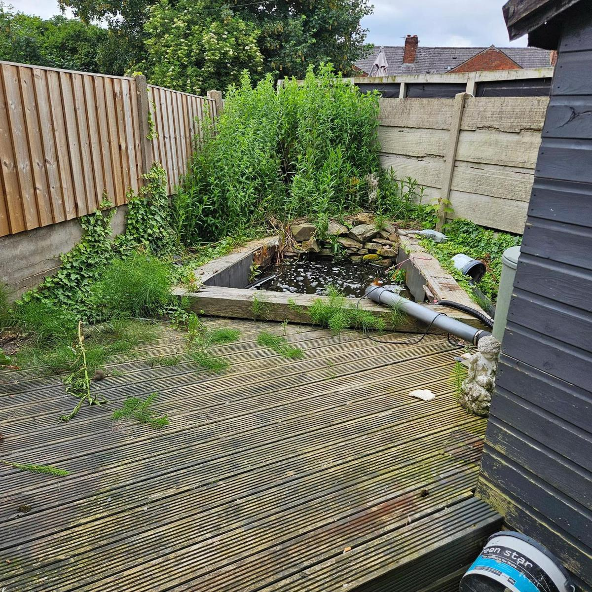
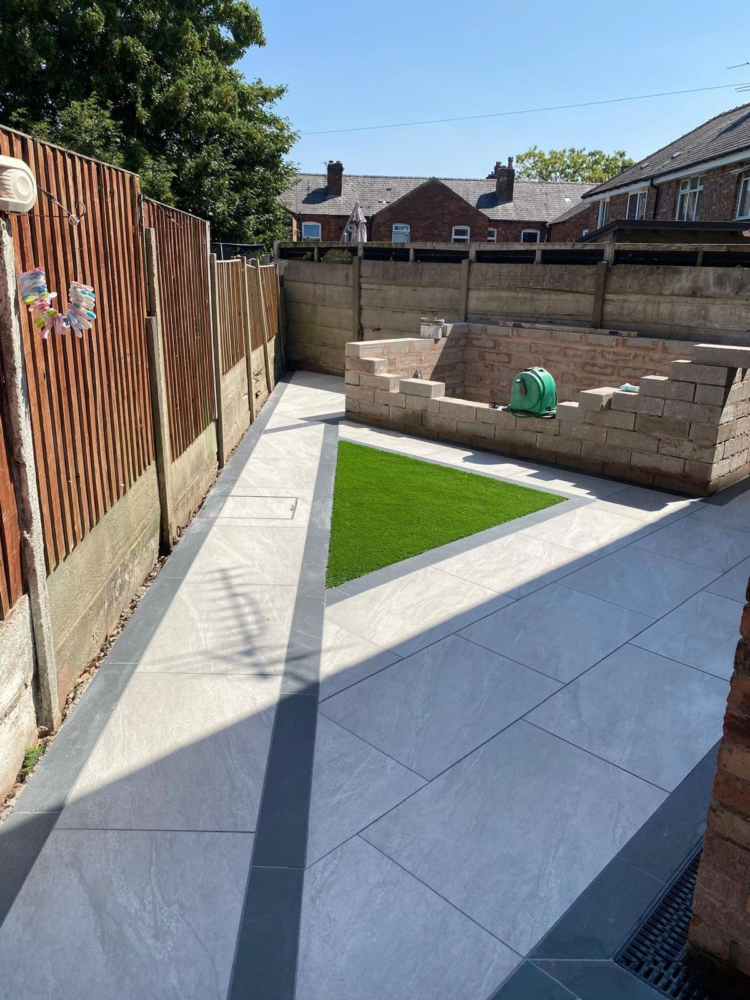
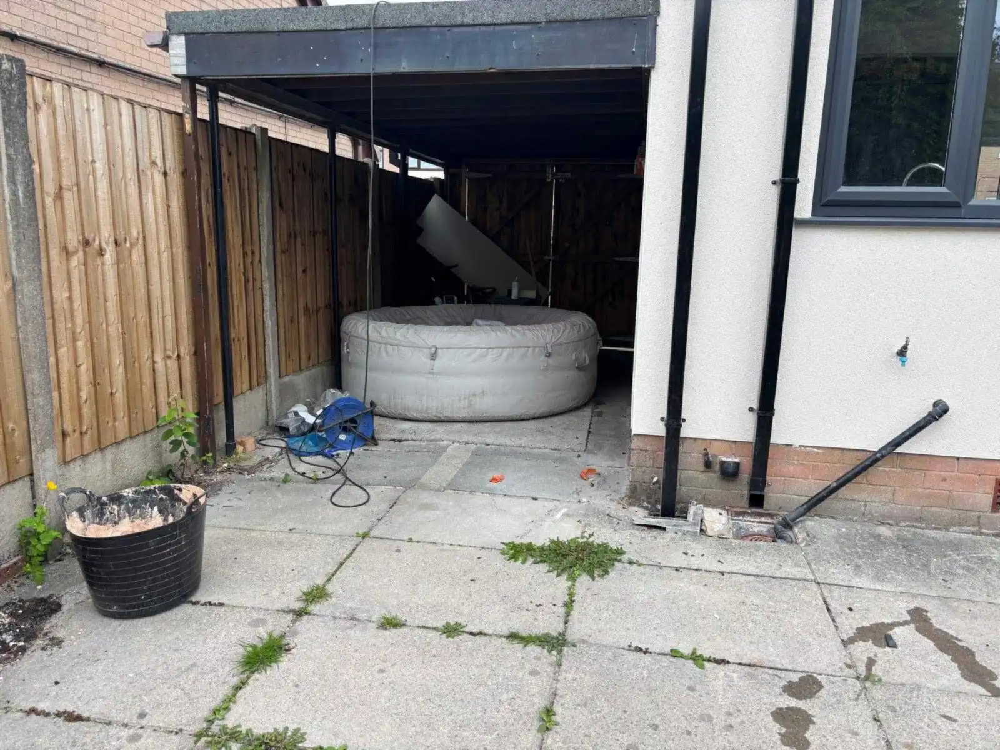
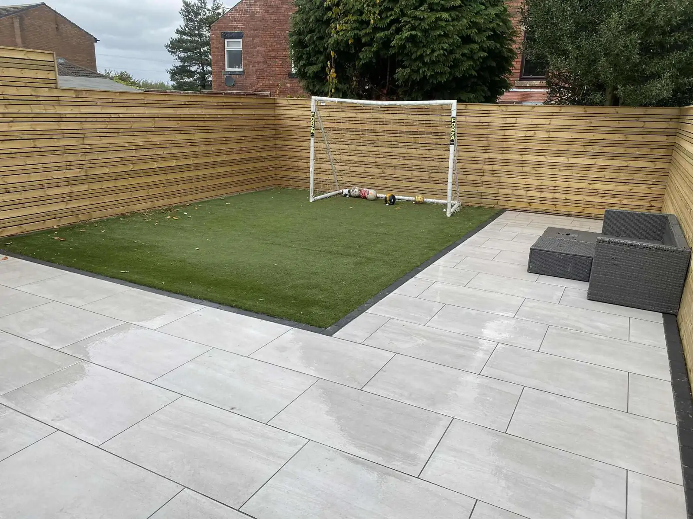
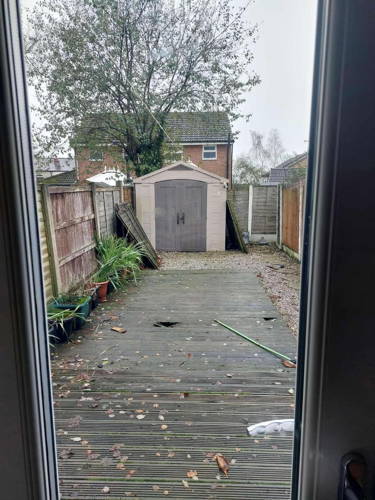
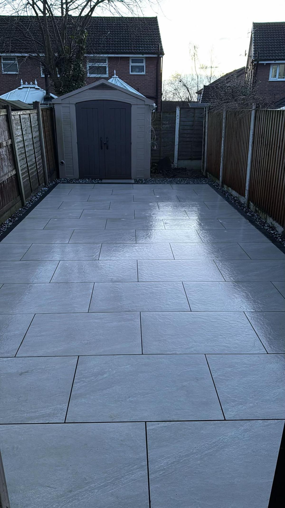
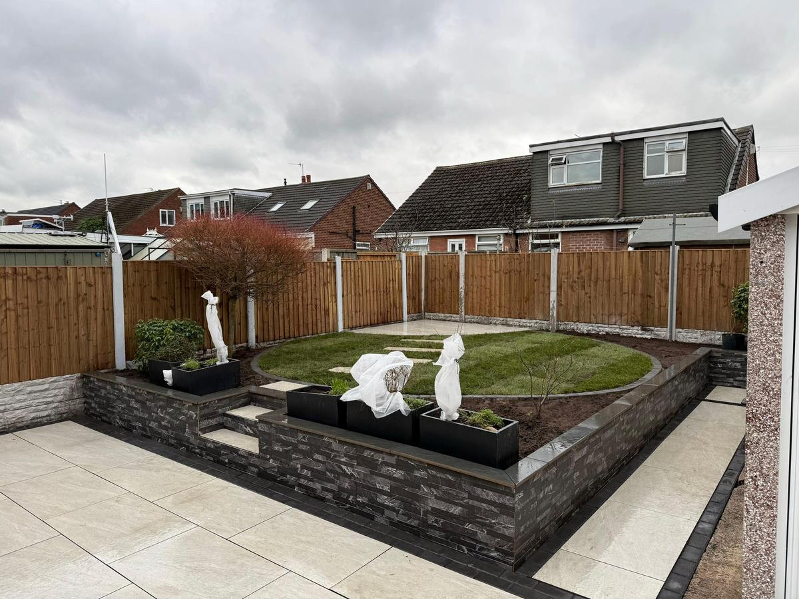
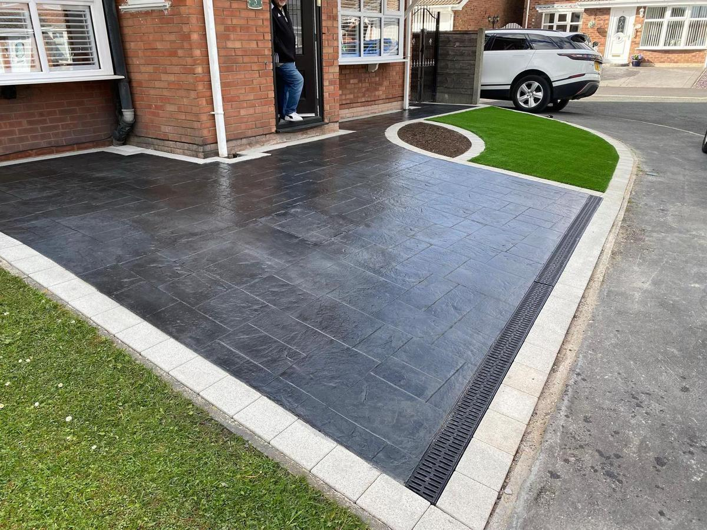
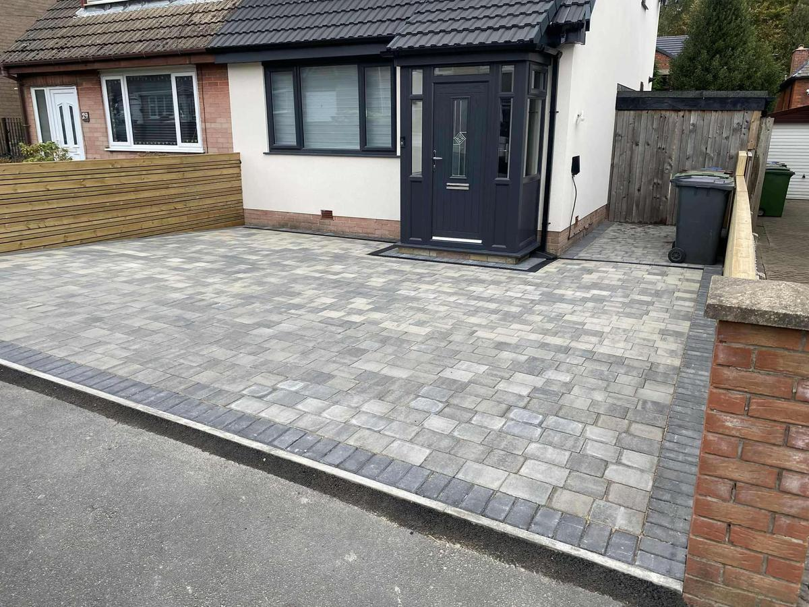

From this, to this: TruDrive driveways and patios in the North West

Driveways and patios across the North West. 15+ years on the tools.
What we lay
- Porcelain Patios, paths, steps
- Block paving Drives and borders
- Imprinted Printed concrete drives
- Tarmac Drives and paths
- Sandstone Indian sandstone patios
- Fencing Timber, slatted, composite
- Turf Real and artificial


Laid.
Slab by slab
Drag it.
Same garden, before and after. Grab the line and pull.



Porcelain garden Patio, steps, clad raised beds, new turf

Printed driveway Imprinted concrete, turf bed, drainage channel

Block paved drive Grey block, charcoal border
15+
Years on the tools
Driveways and patios across the North West.
What they say
For Gaz: once your Google Business Profile is live, your reviews fill these by themselves. After a job, text the customer one link.
How it works
- 1Send photos
WhatsApp Gaz a few pictures of your drive or garden, or give him a ring.
- 2We measure up
He comes out, measures and gives you a price. Free, no obligation.
- 3We lay it
Pick a start date that suits you.